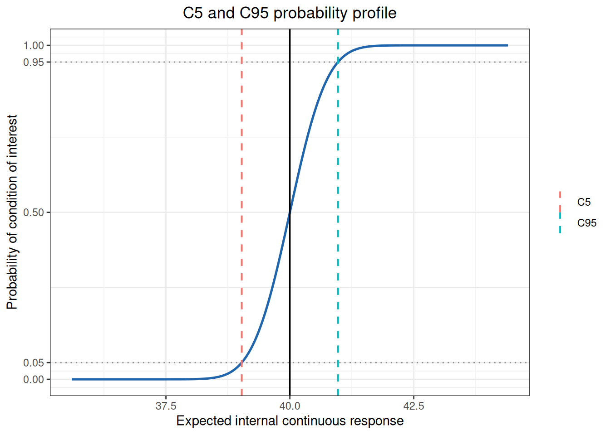

%%{init: {"theme":"base","themeVariables":{"primaryColor":"#EAF2FB","primaryBorderColor":"#2780E3","primaryTextColor":"#212529","lineColor":"#6C757D","secondaryColor":"#EAF7E6","tertiaryColor":"#FFF4E8","fontSize":"13px"},"flowchart":{"nodeSpacing":18,"rankSpacing":24,"padding":6}}}%%
flowchart LR
A{"Input data level"} -->|case-level classifications| B["raw_to_table()"]
A -->|TP/FP/TN/FN| C["counts_to_table()"]
B --> D["diagnostics() / kappa()<br/>mcnemar()"]
C --> D
A -->|continuous internal response| E["continuous_to_binary()<br/>or c5_c95()"]
D --> F["Clinical performance or<br/>observer agreement"]
E --> G["Detection probability near threshold<br/>or claim verification"]
classDef input fill:#EAF2FB,stroke:#2780E3,color:#212529
classDef process fill:#EAF7E6,stroke:#3FB618,color:#212529
classDef decision fill:#FFF4E8,stroke:#FF7518,color:#212529
classDef output fill:#F4EEFB,stroke:#9954BB,color:#212529
class A decision
class B,C,D,E process
class F,G output
15 Qualitative Analysis and C5/C95
This chapter addresses three different questions: whether binary results from a candidate and reference method agree, how strong the agreement between positive/negative classifications is, and where a continuous response reaches a specified detection probability near a critical concentration. The first two questions use paired four-fold tables; the last uses c5_c95().
ImportantScope of Use
Before analysis, fix the positive direction, the reference method or clinical-state definition, the rule for combining replicate measurements, and the confidence-interval method. If a subject has multiple results, define a subject-level classification according to the protocol first; do not treat replicates as independent samples to inflate the sample size.
Workflow: from classification results to qualitative-performance conclusions
Qualitative analysis evaluates agreement between candidate and reference positive/negative classifications, corresponding to CLSI EP12. ivdtools provides raw_to_table() to build a four-fold table from raw paired data, counts_to_table() to build one directly from TP/FP/TN/FN counts, and three analysis methods: diagnostics() (sensitivity, specificity, PPV, NPV, likelihood ratios, and so on), kappa() (Kappa and PABAK), and mcnemar() (paired-difference test). Use continuous_to_binary() when quantitative results must be converted to qualitative classifications.
Code
library(ivdtools)
library(readr)15.1 Main Functions
| Function | Main purpose | Key inputs or outputs |
|---|---|---|
raw_to_table() |
Build a four-fold table from raw paired data | candidate, reference, positive, na.rm |
counts_to_table() |
Build a four-fold table from TP/FP/TN/FN | candidate/reference labels |
continuous_to_binary() |
Convert quantitative results to qualitative classes | cutoff (≥ cutoff is 1) |
describe() |
Describe raw data | Available only for raw_to_table() sources |
diagnostics() |
Diagnostic accuracy metrics | ci.method, prevalence |
kappa() |
Kappa / PABAK | prevalence switch |
mcnemar() |
Paired-difference test | Exact test when discordant pairs <25 |
c5_c95() |
C5/C95 from an internal continuous response | cutoff, direction, precision profile |
Choose the function according to the data level. Use counts_to_table() when TP/FP/TN/FN are already available; use raw_to_table() for paired subject-level classifications; with only continuous signal and reference concentrations, first confirm that the replicate/precision relationship required by c5_c95() can be established. diagnostics(), kappa(), and mcnemar() all operate on the same four-fold table, so denominators must remain consistent in the report.
15.1.1 Four-Fold Metrics and Test Formulas
Code
raw_to_table(data, candidate, reference, id = NULL,
na.rm = TRUE, positive = NULL)
counts_to_table(tp, fp, tn, fn,
candidate = "candidate", reference = "reference")
diagnostics(object, conf.level = 0.95,
ci.method = "wilson", prevalence = NULL)
kappa(x, prevalence = NULL, conf.level = 0.95)
mcnemar(x, conf.level = 0.95)Let the four-fold table be \(a=TP,b=FP,c=FN,d=TN\). Main metrics are
\[ Se=\frac{a}{a+c},\quad Sp=\frac{d}{b+d},\quad PPV=\frac{a}{a+b},\quad NPV=\frac{d}{c+d}, \]
\[ LR^+=\frac{Se}{1-Sp},\qquad LR^-=\frac{1-Se}{Sp}. \]
diagnostics() can use Wilson, Wald, continuity-corrected Wald/Wilson, Agresti–Coull, Jeffreys, or Clopper–Pearson proportion intervals. When a target-population prevalence \(π\) is supplied, PPV/NPV are recalculated by Bayes’ theorem; the remaining metrics still come from the original table. When a cell is zero, log-approximation intervals for LR or OR may be NA; the function does not automatically apply a 0.5 correction.
Cohen’s Kappa is
\[ \kappa=\frac{P_o-P_e}{1-P_e},\qquad P_o=\frac{a+d}{n}, \]
where \(P_e\) is calculated from the marginal proportions of the two classifications. Passing prevalence to kappa() switches the current implementation to \(PABAK=2P_o-1\); this numeric argument triggers PABAK and records its label but does not enter the formula. McNemar uses only discordant pairs \(b,c\): when \(b+c<25\) it performs a two-sided exact binomial test; otherwise it uses the continuity-corrected statistic
\[ \chi^2=\frac{(|b-c|-1)^2}{b+c}. \]
raw_to_table() and counts_to_table() return four-fold-table objects; continuous_to_binary() returns a data frame with binary columns; describe() returns a descriptive table; and diagnostics(), kappa(), and mcnemar() return statistics, intervals, and test results.
15.1.2 C5/C95 Probability Model
Code
c5_c95(data, result = NULL, sample = NULL, cutoff,
direction = c("geq", "leq"),
probabilities = c(0.05, 0.95), component = NULL,
model.no = 1:10, K = 2, search_range = NULL)For an internal continuous-response mean \(μ\) and precision profile \(σ(μ)\), when direction="geq",
\[ P(\text{positive}\mid\mu) =1-\Phi\left(\frac{c-μ}{σ(μ)}\right). \]
C5/C95 are the values of \(μ\) at which this probability equals 0.05 and 0.95, respectively. Input may be raw replicate data or a precision object after variance() has been run. If there are multiple roots, the function selects the root closest to the cutoff; missing roots, multiple roots, and roots outside the observed-mean range are recorded in issues and should not be ignored.
c5_c95() returns C5/C95, the fitted model, and issues.
15.2 Analysis Examples
15.2.1 Example 1: Complete Analysis of Raw Paired Data
Code
qual <- read_csv("./data/015-定性分析与C5C95/qualitative-raw.csv", show_col_types = FALSE)
qual <- as.data.frame(qual)
qa <- raw_to_table(
qual,
candidate = "new",
reference = "gold",
id = "id",
positive = "positive"
)
qa
Fourfold Table
Source : raw data
Total n : 60
Duplicate IDs : none
Candidate : new
Reference : gold
2x2 Contingency Table
----------------------------------------
gold
positive negative Sum
----------------------------------------
new positive 23 1 24
negative 1 35 36
sum 24 36 60
---------------------------------------- raw_to_table() requires exactly two levels in both candidate and reference columns; positive specifies the positive level for factor/character mapping; na.rm controls whether missing rows are removed. id is optional and is used to detect duplicate samples.
Code
qa <- describe(qa)
Data Summary
Rows: 60
Columns: 5
ID: 60 unique, no duplicates
new
negative 36 ( 60.0%)
positive 24 ( 40.0%)
gold
negative 36 ( 60.0%)
positive 24 ( 40.0%)
age
Mean (SD): 51.05 (13.45)
Median (Q1-Q3): 48.90 (42.15 - 57.28)
Range: 24.30 - 90.10
gender
F 32 ( 53.3%)
M 28 ( 46.7%)describe() is available only for raw_to_table() sources and reports row count, duplicate IDs, column summaries, and missingness.
Code
qa <- diagnostics(qa, ci.method = "wilson")
Diagnostic Performance Summary
Sensitivity 0.958 (0.798, 0.993)
Specificity 0.972 (0.858, 0.995)
PPV 0.958 (0.798, 0.993)
NPV 0.972 (0.858, 0.995)
Accuracy 0.967 (0.886, 0.991)
Prevalence 0.400 (0.286, 0.526)
LR+ 34.500 (4.986, 238.724)
LR- 0.043 (0.006, 0.292)
Odds Ratio 805.000 (47.921, 13522.837)
# PPV & NPV are based on data prevalence of 0.400.
# Confidence intervals for proportions use 'wilson' method.Sensitivity is 0.958 and specificity is 0.972 in this example. If target-population prevalence is known, use prevalence to recalculate PPV/NPV:
Code
qa <- diagnostics(qa, prevalence = 0.4)
Diagnostic Performance Summary
Sensitivity 0.958 (0.798, 0.993)
Specificity 0.972 (0.858, 0.995)
PPV 0.958 (0.790, 0.993)
NPV 0.972 (0.864, 0.995)
Accuracy 0.967 (0.886, 0.991)
Prevalence 0.400
LR+ 34.500 (4.986, 238.724)
LR- 0.043 (0.006, 0.292)
Odds Ratio 805.000 (47.921, 13522.837)
# PPV & NPV are based on user-specified prevalence of 0.400.
# Confidence intervals for proportions use 'wilson' method.diagnostics() supports seven proportion confidence-interval methods (default "wilson"). With prevalence, PPV/NPV use Bayes’ theorem; otherwise they use the observed prevalence.
Code
qa <- kappa(qa)
Cohen's Kappa
new vs gold
n = 60
Kappa 0.9306
SE 0.0483
95% CI (0.8359, 1.0000)
Observed agreement 0.9667
Expected agreement 0.5200Code
qa <- kappa(qa, prevalence = 0.5)
PABAK
new vs gold
n = 60
Kappa 0.9333
SE 0.0463
95% CI (0.8425, 1.0000)
Observed agreement 0.9667
Expected agreement 0.5000
# PABAK (prevalence = 0.500): 2 * p_obs - 1, assumes expected agreement = 0.5kappa() returns Cohen’s Kappa; with prevalence it instead computes PABAK (2·p_obs − 1). These handle prevalence bias differently, so report the method.
Code
qa <- mcnemar(qa)
McNemar Test
new vs gold
Discordant pairs: b (pos, neg) = 1, c (neg, pos) = 1
n (b + c) = 2
Method: Exact binomial test
P-value: 1.0000
Conclusion: Not significant at 95% confidence levelDiscordant pairs satisfy \(b+c=2<25\), so the function automatically uses the exact binomial test.
Code
summary(qa)
Qualitative Analysis - summary
-------------------------------------------------
Fourfold Table
Source : raw data
Total n : 60
Duplicate IDs : none
Candidate : new
Reference : gold
2x2 Contingency Table
----------------------------------------
gold
positive negative Sum
----------------------------------------
new positive 23 1 24
negative 1 35 36
sum 24 36 60
----------------------------------------
Analyses performed:
[x] Describe
[x] Diagnostics
[x] Kappa
[x] McNemar
Data Summary
Rows: 60
Columns: 5
ID: 60 unique, no duplicates
new
negative 36 ( 60.0%)
positive 24 ( 40.0%)
gold
negative 36 ( 60.0%)
positive 24 ( 40.0%)
age
Mean (SD): 51.05 (13.45)
Median (Q1-Q3): 48.90 (42.15 - 57.28)
Range: 24.30 - 90.10
gender
F 32 ( 53.3%)
M 28 ( 46.7%)
Diagnostic Performance Summary
Sensitivity 0.958 (0.798, 0.993)
Specificity 0.972 (0.858, 0.995)
PPV 0.958 (0.790, 0.993)
NPV 0.972 (0.864, 0.995)
Accuracy 0.967 (0.886, 0.991)
Prevalence 0.400
LR+ 34.500 (4.986, 238.724)
LR- 0.043 (0.006, 0.292)
Odds Ratio 805.000 (47.921, 13522.837)
# PPV & NPV are based on user-specified prevalence of 0.400.
# Confidence intervals for proportions use 'wilson' method.
PABAK
new vs gold
n = 60
Kappa 0.9333
SE 0.0463
95% CI (0.8425, 1.0000)
Observed agreement 0.9667
Expected agreement 0.5000
# PABAK (prevalence = 0.500): 2 * p_obs - 1, assumes expected agreement = 0.5
McNemar Test
new vs gold
Discordant pairs: b (pos, neg) = 1, c (neg, pos) = 1
n (b + c) = 2
Method: Exact binomial test
P-value: 1.0000
Conclusion: Not significant at 95% confidence level15.2.2 Example 2: Build Directly from TP/FP/TN/FN
When counts are already available, raw data are not needed:
Code
tab <- counts_to_table(
tp = 80, fp = 5, tn = 120, fn = 3,
candidate = "new method",
reference = "gold standard"
)
tab
Fourfold Table
Source : counts
Total n : 208
Candidate : new method
Reference : gold standard
2x2 Contingency Table
-----------------------------------------------
gold standard
positive negative Sum
-----------------------------------------------
new method positive 80 5 85
negative 3 120 123
sum 83 125 208
----------------------------------------------- Code
tab <- diagnostics(tab)
Diagnostic Performance Summary
Sensitivity 0.964 (0.899, 0.988)
Specificity 0.960 (0.910, 0.983)
PPV 0.941 (0.870, 0.975)
NPV 0.976 (0.931, 0.992)
Accuracy 0.962 (0.926, 0.980)
Prevalence 0.399 (0.335, 0.467)
LR+ 24.096 (10.198, 56.934)
LR- 0.038 (0.012, 0.114)
Odds Ratio 640.000 (148.773, 2753.180)
# PPV & NPV are based on data prevalence of 0.399.
# Confidence intervals for proportions use 'wilson' method.Code
tab <- kappa(tab)
Cohen's Kappa
new method vs gold standard
n = 208
Kappa 0.9201
SE 0.0277
95% CI (0.8659, 0.9744)
Observed agreement 0.9615
Expected agreement 0.5184Code
tab <- mcnemar(tab)
McNemar Test
new method vs gold standard
Discordant pairs: b (pos, neg) = 5, c (neg, pos) = 3
n (b + c) = 8
Method: Exact binomial test
P-value: 0.7266
Conclusion: Not significant at 95% confidence levelCode
describe(tab) # count sources have no raw data; describe() is unavailableObjects built by counts_to_table() have no raw data, so describe() is unavailable; diagnostics(), kappa(), and mcnemar() work normally.
15.2.3 Example 3: Convert Quantitative Data to Qualitative
The candidate method is the quantitative result result and the reference is the qualitative variable gold:
Code
cont <- read_csv("./data/015-定性分析与C5C95/qualitative-continuous.csv", show_col_types = FALSE)
cont <- as.data.frame(cont)
head(cont, 6) id result gold
1 S001 10.111087 positive
2 S002 13.057209 positive
3 S003 1.534680 negative
4 S004 7.782787 negative
5 S005 4.982424 negative
6 S006 9.443399 negativeConvert to binary at cutoff 8:
Code
cont_bin <- continuous_to_binary(cont, cols = "result", cutoff = 8)
head(cont_bin, 6) id result gold result_binary
1 S001 10.111087 positive 1
2 S002 13.057209 positive 1
3 S003 1.534680 negative 0
4 S004 7.782787 negative 0
5 S005 4.982424 negative 0
6 S006 9.443399 negative 1continuous_to_binary() creates result_binary (>= cutoff is 1, otherwise 0). To satisfy the positive mapping requirement of raw_to_table(), relabel it consistently with the reference:
Code
cont_bin$result_binary_lab <- ifelse(cont_bin$result_binary == 1, "positive", "negative")Code
qa3 <- raw_to_table(
cont_bin,
candidate = "result_binary_lab",
reference = "gold",
id = "id",
positive = "positive"
)
qa3 <- diagnostics(qa3)
Diagnostic Performance Summary
Sensitivity 0.952 (0.773, 0.992)
Specificity 0.897 (0.736, 0.964)
PPV 0.870 (0.679, 0.955)
NPV 0.963 (0.817, 0.993)
Accuracy 0.920 (0.812, 0.968)
Prevalence 0.420 (0.294, 0.558)
LR+ 9.206 (3.140, 26.994)
LR- 0.053 (0.008, 0.361)
Odds Ratio 173.333 (16.746, 1794.100)
# PPV & NPV are based on data prevalence of 0.420.
# Confidence intervals for proportions use 'wilson' method.The level supplied to positive must exist in both columns, so relabel the binary column as positive/negative first. If positive is omitted, the function may reverse the positive/negative direction according to sorted levels and flip TP/FP; always check.
15.2.4 Example 4: Estimate C5/C95 from an Internal Continuous Response
When a qualitative classification is based on an internal continuous signal and a fixed cutoff, use replicate measurements to establish an SD–mean precision profile and then find the mean response at the specified positive probabilities. Here result >= 40 defines the target event:
Code
head(c5_data, 6) level response
1 L1 35.14000
2 L1 35.29636
3 L1 35.45273
4 L1 35.60909
5 L1 35.76545
6 L1 35.92182Code
c5_result <- c5_c95(
c5_data,
result = "response",
sample = "level",
cutoff = 40,
direction = "geq",
probabilities = c(0.05, 0.95),
model.no = 1
)
c5_resultC5/C95 estimation from an internal continuous response
Source: raw data
Precision component: repeatability
Event: response >= cutoff
cutoff label probability mean_response SD actual_probability extrapolated
------------------------------------------------------------------------------
40 C5 0.05 39.0291 0.5903 0.05 FALSE
40 C95 0.95 40.9709 0.5903 0.95 FALSE Code
plot(c5_result, type = "probability")
direction = "geq" means a response greater than or equal to the cutoff is the target event; "leq" means less than or equal to the cutoff. If a root lies outside the observed mean range, the object marks extrapolation. The precision-profile model and its coverage range should be included in the interpretation.